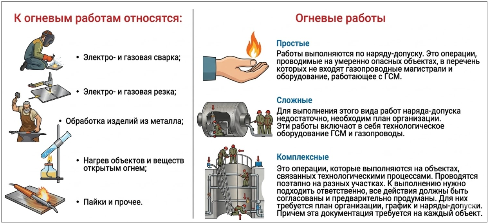
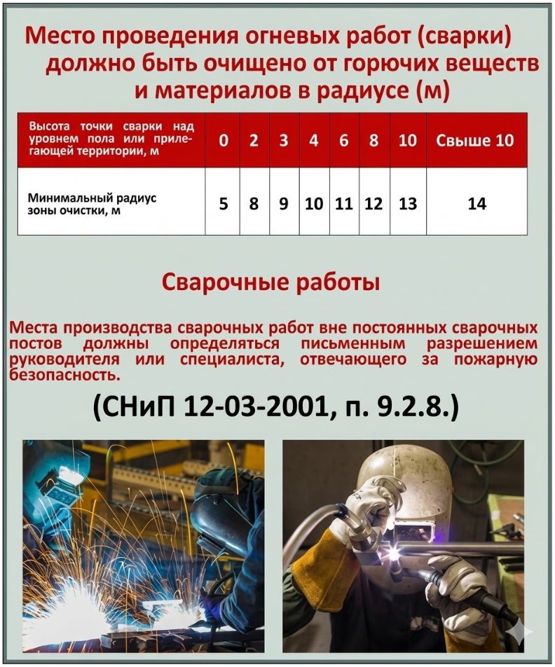
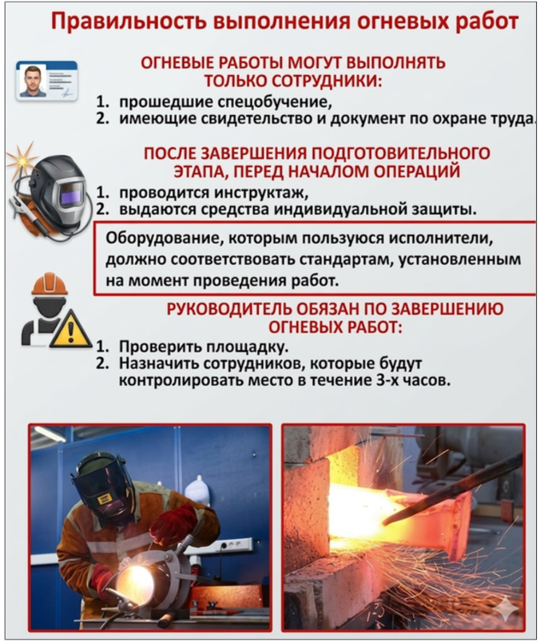
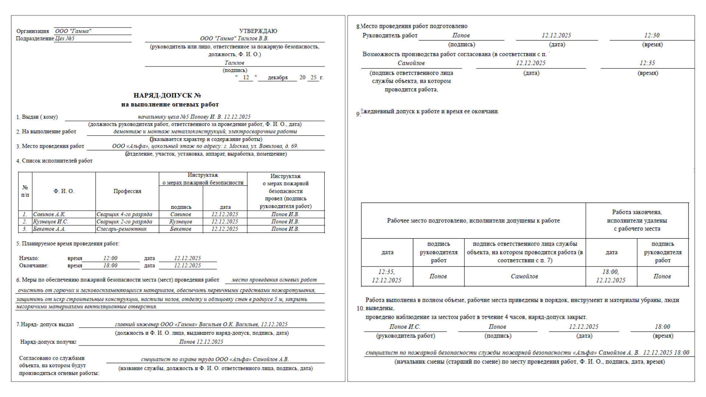

Как проводить и оформлять огневые работы
На этом уроке мы разберем классификацию огневых работ и меры безопасности при их проведении. Вы научитесь правильно оформлять наряд-допуск — основной документ, который защищает ИТР от юридических рисков. Эти знания необходимы для разработки качественного Проекта производства работ.
Что относится к огневым работам
Огневые работы — это производственные процессы с использованием открытого огня, искрообразованием или нагревом конструкций до температур, способных вызвать возгорание. Поскольку заменить эти методы более безопасными на стройке практически невозможно, ключевым фактором становится соблюдение защитных мер.
К основным видам огневых работ относятся:
- Электро- и газосварка, а также резка металла.
- Механическая обработка изделий (шлифовка, резка), сопровождающаяся искрами.
- Нагрев объектов и веществ (например, битума) открытым огнем.
- Пайка и бензо-керосинорезные работы.
Категории сложности огневых работ
Требования к подготовке зависят от того, насколько опасен объект. В промышленной безопасности принято выделять три категории сложности.
| Категория | Особенности объекта | Необходимые документы |
|---|---|---|
| Простые | Объекты без газопроводов и горюче-смазочных материалов. | Наряд-допуск. |
| Сложные | Работа с газопроводами и технологическим оборудованием (ГСМ). | Наряд-допуск + подробный план организации работ. |
| Комплексные | Объекты, связанные сложными техпроцессами; работа ведется поэтапно. | План организации, график и разрешения на каждый отдельный объект. |
Ниже я продублировал для вас описание видов огневых работ в наглядной картинке. Вы можете сохранить ее себе, чтобы она всегда была у вас и ваших коллег под рукой:

Выбор категории сложности напрямую влияет на меры безопасности. Поскольку сварка является самым массовым видом огневых работ, именно на ее примере мы разберем критически важные требования к радиусу очистки зоны от горючих материалов. Эти требования обязательны для исполнения вне зависимости от того, считается ли работа простой или комплексной.

Меры безопасности и подготовка
В процессе выполнения работ, связанных с использованием открытого огня, необходимо строго следовать правилам промышленной и пожарной безопасности. Без четкого алгоритма даже опытный рабочий может допустить ошибку, которая приведет к пожару. Поэтому я подготовил для вас памятку с мерами при проведении огневых работ. Обязательно скачайте ее и всегда держите под рукой.
Подготовка к работам проводится под наблюдением назначенного руководителя. Весь процесс делится на три этапа:
Допуск персонала: Опасные операции могут выполнять только сотрудники со специальным обучением, имеющие квалификационное свидетельство и документ по технике безопасности.
Инструктаж: После завершения подготовки площадки исполнители проходят целевой инструктаж и получают средства индивидуальной защиты (СИЗ). Инструктирующий во время инструктажа обязательно перечисляет список запретов в рабочей зоне. Для вашего удобства, я добавил их в удобную памятку-плакат, которую можно использовать перед началом огневых работ.
Встроенный плакат

Страница 1 Текст встроенного материала
В рабочей зоне запрещается:
Работать с оборудованием, которое имеет дефекты и неисправности.
Работать с поверхностями, которые были недавно окрашены.
Использовать спецодежду, на которой есть пятна от веществ, способных гореть.
Допускать контакт материалов, которые могут гореть, с электрической проводкой и сжиженным углеводородным газом (СУГ).
Производить работы в инженерных сетях, которые находятся под напряжением или заполнены опасными веществами.
Резать, сваривать или паять ёмкости без предварительной очистки их поверхностей от опасных материалов.
Работать с аппаратами для сварки на улице во время летних или зимних осадков.
Одновременно использовать газовое и электрооборудование.
Скачать
Источник и ограничения. Проверка ответов, анимация и персонализация работают только на исходном сайте.
Пост-контроль: После завершения работ руководитель обязан лично проверить площадку.
Вам может показаться, что в этом уроке много памяток. Но я подготовил их не просто так: огневые работы действительно сложный и ответственный вид работ, который требует неукоснительного соблюдения технологий и контроля за площадкой даже после того, как сварщик сложил инструменты.
В последней в этом курсе памятке я собрал критически важные требования к организации процесса огневых работ. Рекомендую также сохранить себе эту памятку и раздать коллегам.

Обеспечьте наблюдение за местом проведения работ в течение трех часов после их окончания.
Порядок оформления наряда-допуска
В начале урока я отмечал, что категория сложности огневых работ напрямую влияет на перечень необходимых документов. Сейчас мы разберем правила заполнения наряда-допуска — основного документа, без которого приступать к работе категорически запрещено.
Наряд-допуск — это юридическое разрешение на работу, которое составляется в двух экземплярах: один остается у лица, ответственного за подготовку объекта, второй — у руководителя работ.
Срок действия и правила:
- Наряд оформляется отдельно на каждый вид работы.
- Документ действителен только в течение одной рабочей смены.
- Если работа не завершена вовремя, наряд-допуск необходимо продлевать в установленном порядке.
В документе обязательно фиксируются: место и время проведения работ, содержание задачи, опасные факторы, состав бригады с отметками об инструктаже, а также подписи лиц, ответственных за подготовку и проведение этапа.
Смотрите ниже, как безошибочно оформлять наряд-допуск. Заполненный образец документа вы можете скачать в дополнительных материалах к уроку.

Практическая часть
Не так сложно оформлять наряд-допуск, когда есть заполненный образец. Намного сложнее уметь определять, есть ли в нем ошибки. Сейчас мы это с вами и проверим.
Перед вами фрагмент заполненного наряда-допуска на огневые работы. Кликните на оранжевые точки в местах, где нарушены правила заполнения или требования безопасности. Нажмите «Проверить результат» и наведите курсор на любую из точек, чтобы ознакомиться с экспертным обоснованием по каждому из полей.
Поздравляю, первая часть программы по пожарной безопасности успешно завершена! Мы детально разобрали организацию стройплощадки и проведения огневых работ, а также освоили физику развития пожара и научились рассчитывать параметры эвакуации, чтобы точно определять безопасные маршруты и пропускную способность выходов для спасения персонала.
Переходите к промежуточной проверке знаний. Это ваш пропуск к следующему, более глубокому техническому этапу обучения. После успешного прохождения теста вы перейдете ко второй части программы, где мы разберем устройство и документальное сопровождение систем противопожарной защиты (АПС, СОУЭ, пожаротушение, огнезащита и противодымная вентиляция).
Желаю успехов в тестировании и встретимся во втором модуле программы!
{kind=link}
{kind=link}
{kind=link}